install.packages("tidyverse")RStudio and Reproducibility
A guided tour
Pregame
Intro
- Today we will quickly tour RStudio and then demonstrate a good way to start your next reproducible analysis.
- Since code notebooks can confuse users about the current state of a variable, we will discuss where problems come up and how to troubleshoot.
RStudio
The IDE Idea
- R is a complete programming language.
- RStudio is an Integrated Development Environment that interacts with R (and other languages you have installed, like
python). - It gives you lots of graphical interfaces, but almost every action is recorded in code or can be executed with code.
- RStudio is designed to gently push you towards writing things down, which makes them more reproducible.
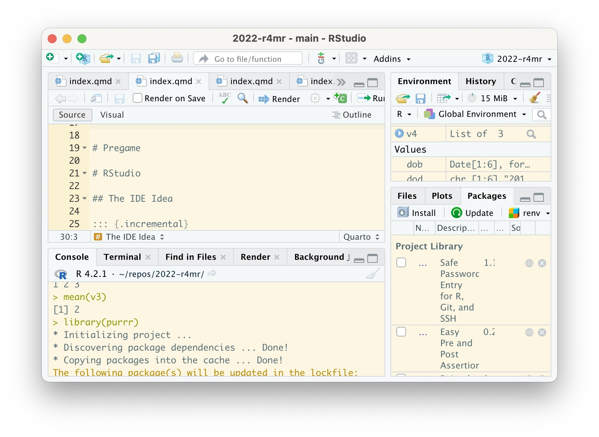
The Project
Most of the time, RStudio encapsulates your work in a project. You’re project is in a folder, and comes with a .Rproj file, a .Rhistory file, and some other optional things (like git, renv).
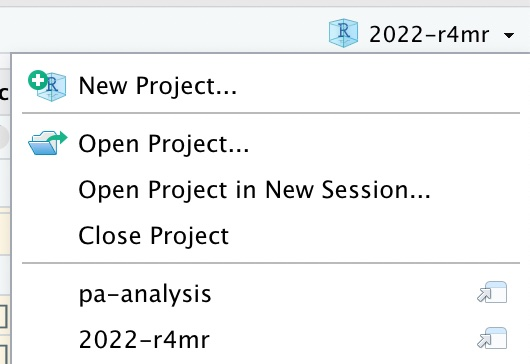
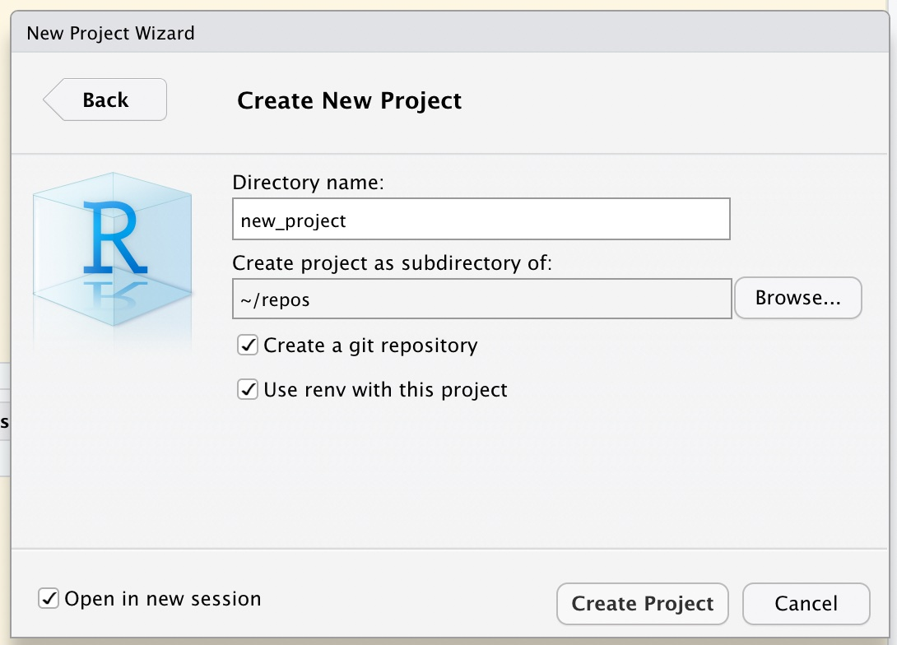
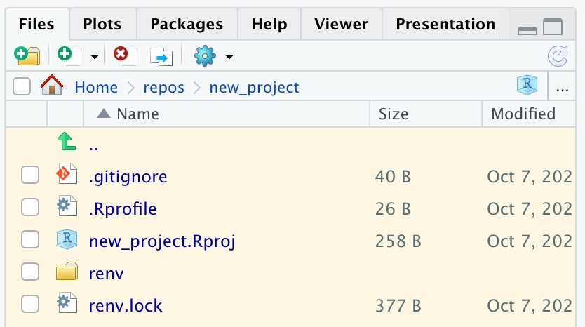
Packages
Packages Pane
The install button helps with autocomplete. You can also manage which packages are loaded by checking them.
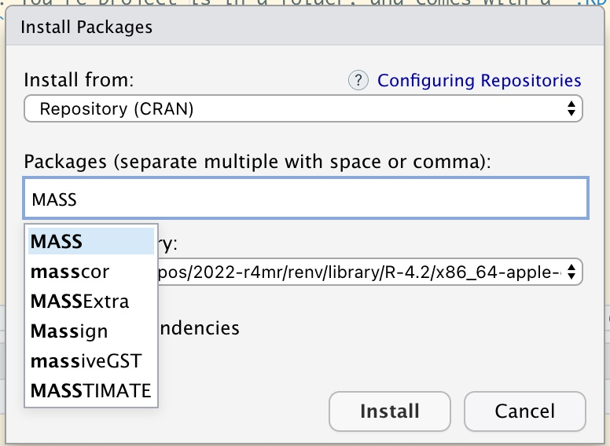
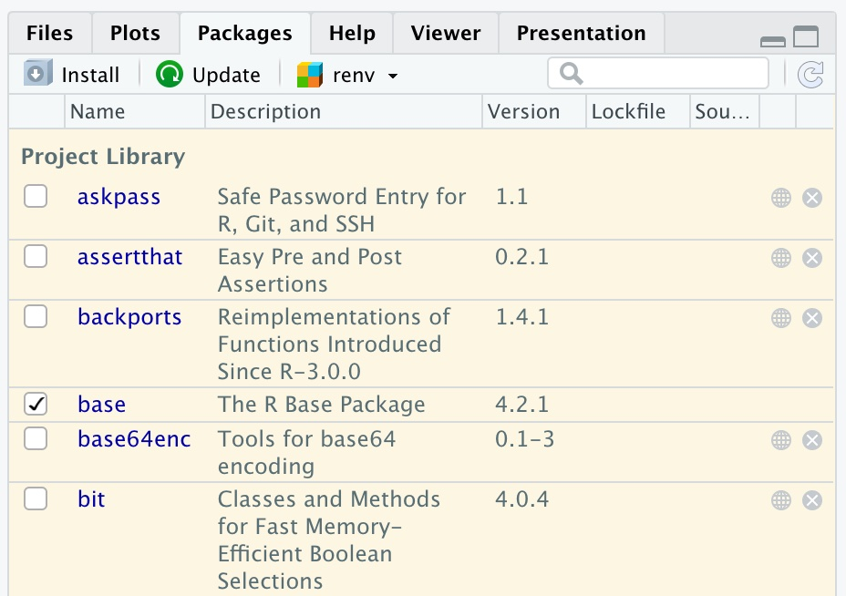
With Code
Usually, you need to install some packages to get started.
R is open source software, meaning there is less top-down coordination, and fewer guarantees than from Stata. However, that means that there are typically many more options and many fewer limitations.
However, you should try to vet (and cite!) the software you use.
Tip: Search ___ r package cran or ___ r package github. If the updated dates you find here are in the last few years, you are probably good to go.
R session and packages
When you open RStudio, it starts an R session for you. You can have multiple sessions on the same computer, and multiple RStudios running at the same time. Each one starts it’s own R process.
This is nice if you want to work on multiple projects at the same time.
A session contains loaded libraries.
# several packages
library(dplyr)
library(ggplot2)
library(stringr)
# or a meta-package
library(tidyverse)If something crashes, and your session restarts, you will have to reload these.
Console
The console is the “written record.” Everything that happens, happens in the console. There are helpful messages that appear in the console. These appear only here. Errors happen here.
Tip
Paste errors in the console into google!

When you start RStudio, you can see it starts R for you.
Source
Source refers to code files. The two main ones are R scripts and Rmarkdown (or Quarto, which is like version 2 of Rmarkdown).
R script (.R) |
Rmarkdown/Quarto (.Rmd/.qmd) |
|---|---|
.R extension |
.Rmd or .qmd extension |
| just a text file | formatted text file (markdown) containing code chunks (R, python, Latex) |
| stays a text file | “compiles” or “knits” to rich output, like .html or .docx |
| plain | contains plots, and intermediate steps. |
| needs R to run | needs RStudio to run |
| makes up packages | makes up analysis |
| backbone of R | reproducible anaylsis, |
Source example
- In an R script, all of the space is code, except comments.
- In a
.Rmdo.qmd, there is a header with metadata (inyml), code chunks inRorpython, among others. And formating inmarkdownorlatex. Compares tojupyternotebooks, but clean separation between code and output.
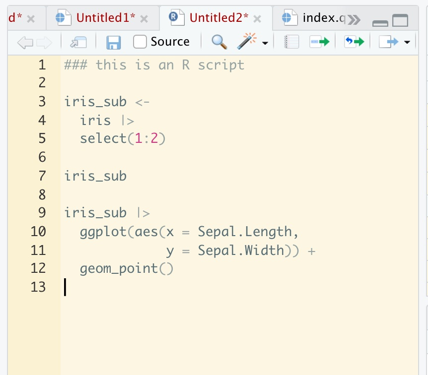
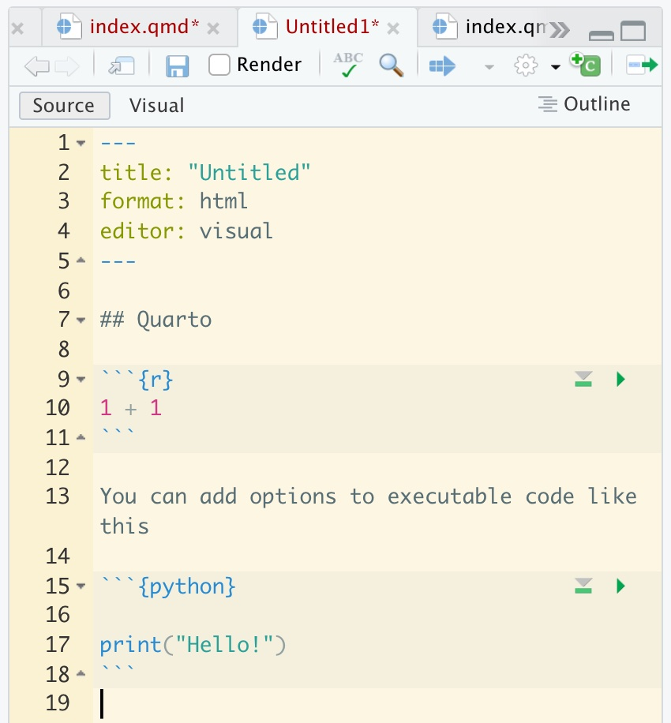
Environment pane
- The most important pane for new users is the environment pane.
- If in doubt, this will always tell you the current state of your variables (by default). 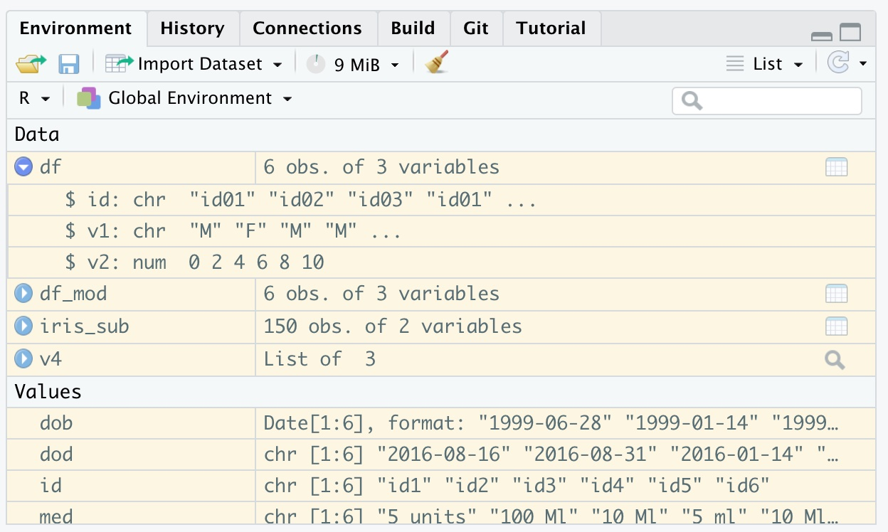
State Demo Downstream
tv <- c(1:4)
tv2 <- tv
tv2 <- c(tv, NA)
tvState Demo Downstream
tv <- c(1:4)
tv2 <- tv
tv2 <- c(tv, NA)
tv[1] 1 2 3 4Changes to variables downstream don’t change the variables that depend on them.
State Demo Upstream
tv <- c(1:4)
tv2 <- tv
tv <- c(tv, 5:6)
tv2State Demo Upstream
tv <- c(1:4) #1
tv2 <- tv #3
tv <- c(tv, 5:6) #2
tv2 #4[1] 1 2 3 4- Changes to variables first defined upstream don’t change the variables that depend on them…
- IF the depending variables were defined even further upstream.
- What happens if the code was run in the order of the numbers?
State Demo
Again, for the sake of reproducibility, you will need to compile the whole document eventually in a clean environment.
Remember: code wants to be run sequentially. You can get into trouble if you define things somewhere downstream, but then depend on it upstream. The best guard against this is to use these options: 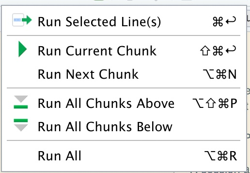
Plots
By default, plots will show in the source pane for Rmarkdown and the “Plots” pane for scripts. You can have them all show in the “Plots” pane by going to Preferences > R Markdown and unchecking Show all output inline .
iris |>
ggplot(aes(x = Sepal.Length,
y = Sepal.Width)) +
geom_point()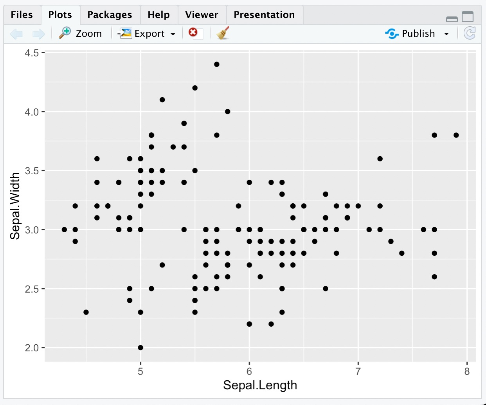
Help
Finally, if you are having issues, and you don’t want to explore the internet for answers, all functions, and built-in data, come with documentation. Just put ? before the item of interest.
?iris
?rnorm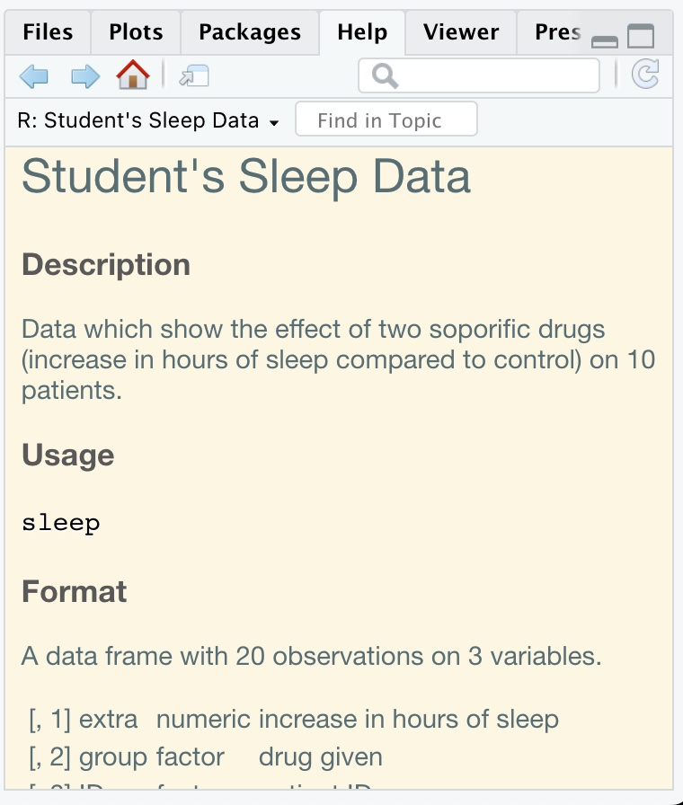
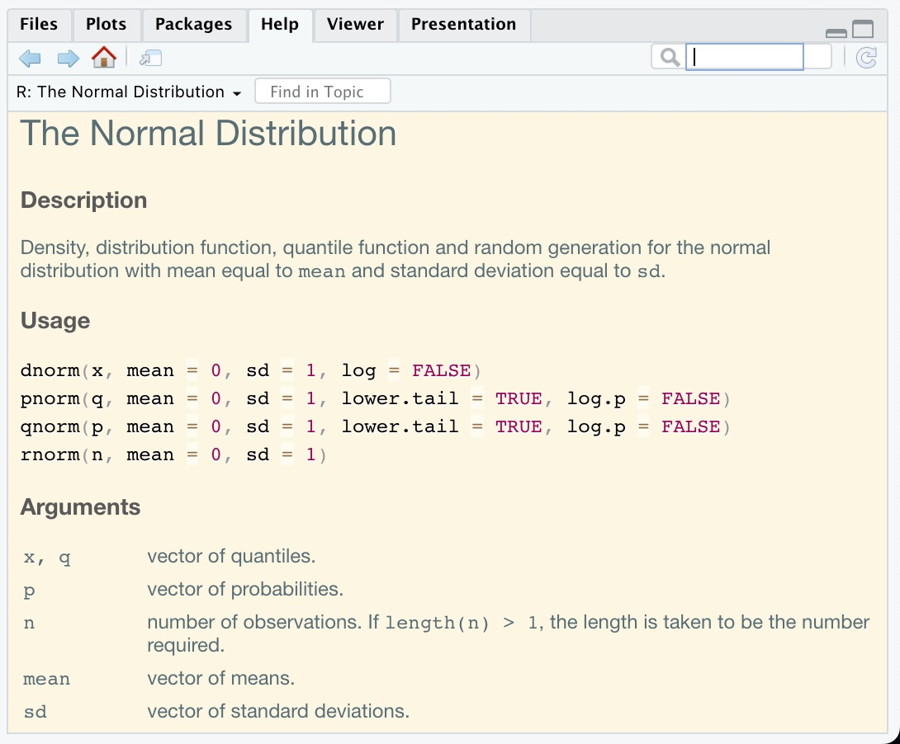
Demo
You’re first reproducible document.